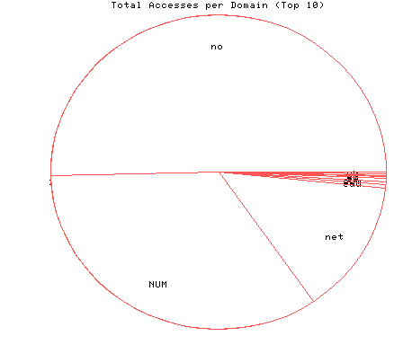
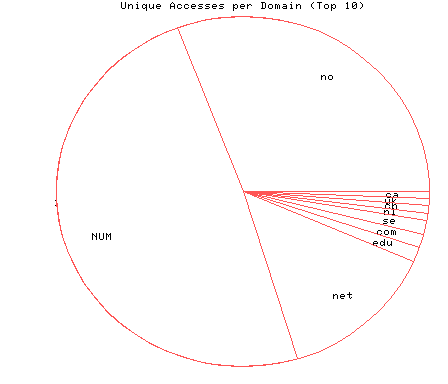

HTTP Server Domain Statistics
Covers: 11/17/95 to 11/20/95 (4 days).
All dates are in local time.
1 level, sorted by number of requests, 10 unique domains.
310 : 47 : 11/20/95 : Norway (.no) 210 : 75 : 11/20/95 : (numerical domains) 85 : 21 : 11/19/95 : Network (.net) 2 : 2 : 11/20/95 : US Educational (.edu) 2 : 2 : 11/19/95 : US Commercial (.com) 2 : 2 : 11/19/95 : Sweden (.se) 1 : 1 : 11/19/95 : Netherlands (.nl) 1 : 1 : 11/19/95 : Switzerland (.ch) 1 : 1 : 11/19/95 : United Kingdom (.uk) 1 : 1 : 11/17/95 : Canada (.ca)

Statistics generated at Wed Nov 22 13:56:41 MET 1995, (C) Schibsted Nett AS, 1995.